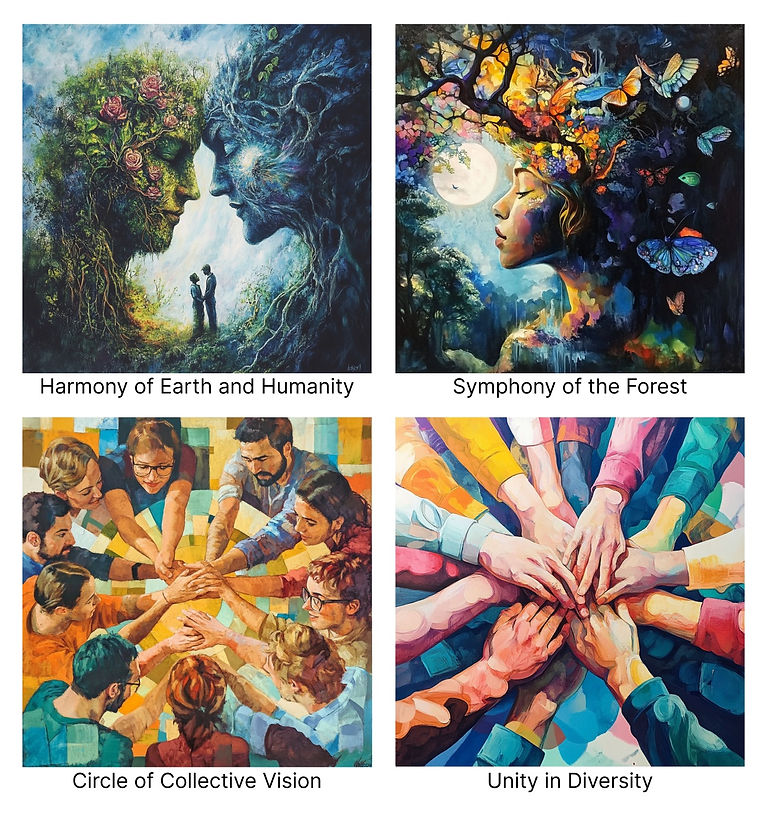

Vote for the Artwork on the First Series of Our 2024 Limited Edition Paulo’s Farm Ceremonial Cacao Collection!
Published: May 08, 2025By TrueSight Community

At Agroverse, we’re thrilled to share our 2024 Limited Edition Ceremonial Cacao, sourced from a single regenerative harvest at Paulo’s Farm in Pará, Brazil, where cacao farming helps restore the Amazon rainforest. This exclusive collection of 1,500 bags is released in three unique series of 500 bags each, with every series featuring a distinct artwork chosen by our Agroverse community. For the First Series, vote from four inspiring designs to decide which will grace the 500 bags. New artwork sets will be revealed for the Second and Third Series, offering fresh opportunities to shape this collection. Cast your vote for the First Series and join us in celebrating cacao, art, and restoration!
Artwork Options
Harmony of Earth and Humanity
This captivating artwork portrays a profound connection between humanity and the natural world. Two colossal faces, one vibrant with lush greenery and blooming roses, the other ethereal with cosmic hues and twisted branches, emerge from the landscape in a mirrored embrace. Below, a couple stands hand in hand, gazing upward, symbolizing the harmony between human existence and the nurturing spirit of the forest. The piece beautifully captures the essence of Agroverse’s mission—restoring the Amazon rainforest through regenerative cacao farming—blending earthy tones with a mystical aura to inspire unity and reverence for nature.
Symphony of the Forest
This mesmerizing artwork features a serene female figure whose hair transforms into a vibrant tapestry of flowers, butterflies, and birds, set against a lush forest backdrop under a glowing full moon. The rich blend of colors—deep blues, fiery oranges, and soft pinks—symbolizes the harmony between nature’s diverse elements. With her eyes closed in peaceful contemplation, the figure embodies a collaborative spirit, reflecting the unity of the ecosystem and the regenerative efforts of Agroverse’s cacao farming in the Amazon. The fluttering butterflies and blooming flora evoke a sense of renewal and partnership with the natural world.
Circle of Collective Vision
This vibrant painting depicts a circle of diverse individuals joining hands in a powerful display of unity and teamwork. Set against a dynamic background of colorful, patchwork-like hues, the group’s outstretched arms converge at the center, forming a radiant golden core that symbolizes shared strength and purpose. The warm tones and expressive brushstrokes reflect the spirit of community and cooperation, mirroring Agroverse’s mission to unite farmers, artists, and supporters in restoring the Amazon through regenerative cacao farming. This artwork captures the essence of collective effort and the joy of working together toward a common goal.
Unity in Diversity
This dynamic artwork showcases a group of hands reaching inward, overlapping in a vibrant stack that radiates unity and shared purpose. The diverse array of colors—blues, oranges, pinks, and greens—paints a vivid picture of collaboration, with each hand representing a unique contribution to a collective effort. The abstract, watercolor-like background enhances the sense of fluidity and connection, echoing Agroverse’s commitment to bringing people together in the mission to restore the Amazon through regenerative cacao farming. This piece captures the power of community and the beauty of working hand in hand toward a sustainable future.
A Look at Paulo’s Farm
Get a glimpse of Paulo’s Farm and the regenerative work behind our 2024 cacao harvest.
Cast Your Vote!
How to Shape the First Series
Choose your favorite from the four artworks below to feature on the 500 bags of the First Series. The winning design will be exclusive to this release. For the Second and Third Series, we’ll introduce new artwork sets for you to vote on, making each series a unique reflection of our mission. Your vote helps craft this collection—make it count!
Note: All 1,500 bags come from the same 2024 Paulo’s Farm harvest, with each series distinguished by its community-chosen artwork.
Select Your Favorite Artwork (Refer to Composite Image)
![This captivating artwork portrays a profound connection between humanity and the natural world. Two colossal faces, one vibrant with lush greenery and blooming roses, the other ethereal with cosmic hues and twisted branches, emerge from the landscape in a mirrored embrace. Below, a couple stands hand in hand, gazing upward, symbolizing the harmony between human existence and the nurturing spirit of the forest. The piece beautifully captures the essence of Agroverse’s mission—restoring the Amazon rainforest through regenerative cacao farming—blending earthy tones with a mystical aura to inspire unity and reverence for nature.](../../assets/images/blog-posts/Vote_for_the_Artwork_on_the_First_Series_of_Our_2024_Limited_Edition_Paulo_s_Farm_Ceremonial_Cacao_Collection__0e2cde_3c76ad6a73664725b30234509155c781_mv2.jpeg)
![This mesmerizing artwork features a serene female figure whose hair transforms into a vibrant tapestry of flowers, butterflies, and birds, set against a lush forest backdrop under a glowing full moon. The rich blend of colors—deep blues, fiery oranges, and soft pinks—symbolizes the harmony between nature’s diverse elements. With her eyes closed in peaceful contemplation, the figure embodies a collaborative spirit, reflecting the unity of the ecosystem and the regenerative efforts of Agroverse’s cacao farming in the Amazon. The fluttering butterflies and blooming flora evoke a sense of renewal and partnership with the natural world.](../../assets/images/blog-posts/Vote_for_the_Artwork_on_the_First_Series_of_Our_2024_Limited_Edition_Paulo_s_Farm_Ceremonial_Cacao_Collection__0e2cde_2067d9f62c92421481cb943fa8e19183_mv2.jpeg)
![This vibrant painting depicts a circle of diverse individuals joining hands in a powerful display of unity and teamwork. Set against a dynamic background of colorful, patchwork-like hues, the group’s outstretched arms converge at the center, forming a radiant golden core that symbolizes shared strength and purpose. The warm tones and expressive brushstrokes reflect the spirit of community and cooperation, mirroring Agroverse’s mission to unite farmers, artists, and supporters in restoring the Amazon through regenerative cacao farming. This artwork captures the essence of collective effort and the joy of working together toward a common goal.](../../assets/images/blog-posts/Vote_for_the_Artwork_on_the_First_Series_of_Our_2024_Limited_Edition_Paulo_s_Farm_Ceremonial_Cacao_Collection__0e2cde_4168487f71184a39a2f95b89d2189efb_mv2.jpeg)
![This dynamic artwork showcases a group of hands reaching inward, overlapping in a vibrant stack that radiates unity and shared purpose. The diverse array of colors—blues, oranges, pinks, and greens—paints a vivid picture of collaboration, with each hand representing a unique contribution to a collective effort. The abstract, watercolor-like background enhances the sense of fluidity and connection, echoing Agroverse’s commitment to bringing people together in the mission to restore the Amazon through regenerative cacao farming. This piece captures the power of community and the beauty of working hand in hand toward a sustainable future.](../../assets/images/blog-posts/Vote_for_the_Artwork_on_the_First_Series_of_Our_2024_Limited_Edition_Paulo_s_Farm_Ceremonial_Cacao_Collection__0e2cde_095d76f5faea4448af90141d7dbdd3bf_mv2.jpeg)